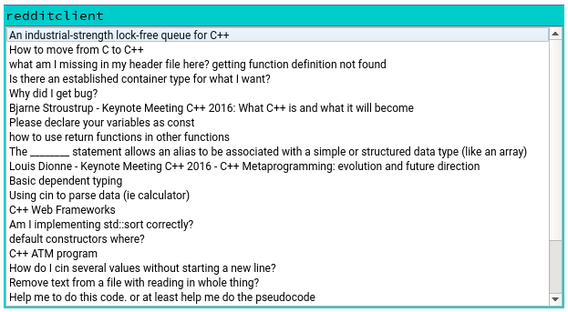

Reddit Example
Demonstrates authenticating with OAuth 2 to access Reddit.

The Reddit example uses OAuth 2, as supported by Qt Network Authorization, to sign in to Reddit and display the Reddit posts (in text format) associated with the authenticated user.
To use this example, a consumer key from Reddit is needed. To register the application visit https://www.reddit.com/prefs/apps/.
Note: Choose installed app when creating the application.
Note: Set the redirect URI to http://127.0.0.1:1337/ in Reddit settings.
Running the Example
To run the example from Qt Creator, open the Welcome mode and select the example from Examples. For more information, visit Building and Running an Example.